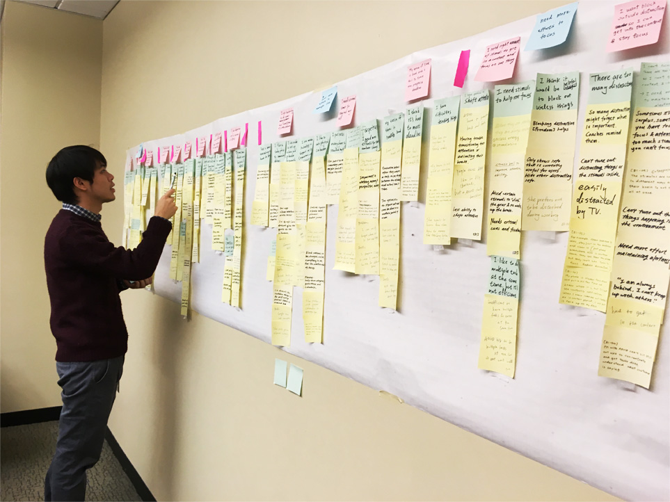
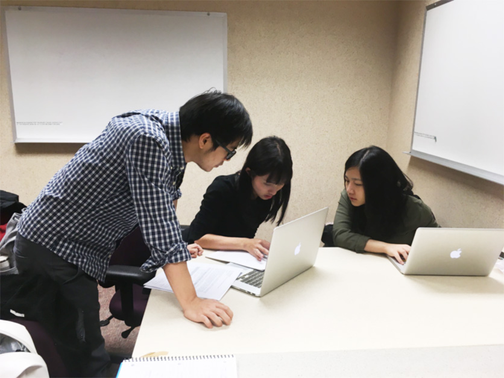
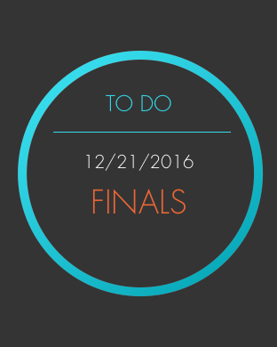
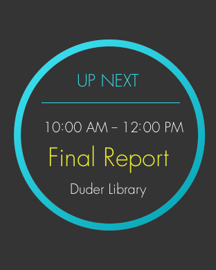
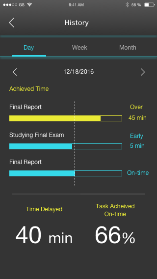
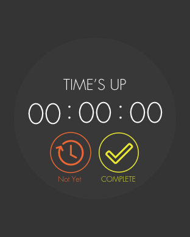
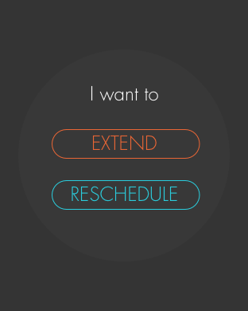

Johnson
Age : 27
Job : Software Developer/Freelancer
People with ADD/ADHD need to make more efforts on remembering things, sensing the time, and following the plan. REMINDer is a smartwatch designed for people with ADD/ADHD to better manage their life and to meet their personal goals.
People with ADD/ADHD have to make more efforts on remembering things, sensing the time, and following the plan. They use sticky notes, paper planner and digital reminder to remind themselves. However, it is still very hard for them to follow the plan and complete the tasks on-time. They are frustrated and self-doubt because they cannot achieve the goals like others can do.
It just take me a little bit longer to do things and understand things.
It just take me a little bit longer to do things and understand things.
It’s kind of hard time for people with ADHD to do project management.
Currently, there is no system designed for people with ADD/ADHD can really solve their problems. Therefore, we decided to design a system for people with ADD/ADHD better manage their life and achieve their own expectations.
To develop a better understanding of people with ADD/ADHD and the difficulties they are facing, we conducted a background research to explore ADD/ADHD symptoms, problems and current solutions. The existing solutions and assistive technology covered schedule planning, to-do list, reminders, blocking distractions and so on. Moreover, a literature review of attention management and habit forming also helped to prepare effective qualitative interview questions for later research.
We interviewed three individuals with ADD/ADHD including one student, one employee, and one entrepreneur. Our primary goal was to uncover the underlying problems of their self-help skills on managing their life and attention, especially why current solutions may not work effectively.
Affinity analysis was used to organize our data and to identify key themes. Even though our interviewees want to be better, they cannot regulate themselves and have difficulties sticking to their plan. We gained four primary insights from this analysis:
1. External Support : All interviewees use technology as a outside regulation because of their lack of internal regulation.
I use calendar and mobile alarm to remind myself when to take pills.
I just have to excessively stick to my planner, calendars and I write everything done.
2. Lack the Sense of Time : The lack of sense of time exacerbates problems of not being able to follow the plan. They often do not notice that they waste too much time on distractions. It is hard for them to start or stop to transitioning between contexts.
It’s hard to track times. My phone or something can easily distract me.
I prefer to be not disturbed during working. My hands get tired to reminder me to rest.
3. The Goal is Ambiguous : People with ADD/ADHD may not be able to envision the future. They need tools that can help them visualize and connect to the future, so that they can keep reminding themselves of important things.
I pin pieces of paper everywhere to remind myself.
I like to record things by taking pictures.
4. Block Distractions : People with ADD/ADHD got distracted easily and they tried to block distractions as possible. They might put their mobile screen face-down, therefore they will not be distracted by the overwhelming notifications or compelling apps.
I like to read books rather than mobile, because there are too many distractions on the phone.
I leave must-have apps on my mobile’s home screen and put all distracting app in a folder on a different screen.
Based on our research, we found that our interviewees are busy with work and have multiple tasks to handle. Most of them use paper planner and digital reminder at the same time. However, not all of the tools always work for them. Therefore, we decide to focus on improving the efficiency of the reminder and helping them better operate their plan. We target on people with ADD/ADHD who are busy, familiar with technology and used to using digital planner.
Based on our user studies, we developed personas of our typical users to help guide our design.
Age : 27
Job : Software Developer/Freelancer
Age : 35
Job : Entrepreneur
People with ADD/ADHD need extra supports and efforts to manage their time and keep focus on their work. According to our findings, we designed a system that can support people with ADD/ADHD by reminding them daily tasks and finding their working patterns, so they can do things better and achieve their personal goals. The system has four main features as following:
1. Time Visualization :
People with ADD/ADHD are not so sensitive with time passing, so we designed a watch that can show current time and time left of their task. User can also tap on the stop button and end up the task if they complete earlier than expectation. When the ending time is approaching, it changes to red and displays the urgency. The design can help user sense the time and encourage them to complete the task in the time limitation.
2. Humanized Reminder :
We designed a reminder as fake message conversation, because people value notification from apps which can be used for communication with others such as messaging apps. Our design is with the event owner’s picture and customized content, in order to make users take the reminder seriously and operate their plan.
3. Less distractions :
Our design is mainly based on a smartwatch with single purpose because its features of wearable and simplicity. User can check the time and time left without checking mobile.We designed the watch that only shows the notifications based on users’ plan. Users do not have to check their mobile after they received notification.
4. Finding Workding Pattern :
Collaborating with REMINDer watch, there is a mobile app to change the settings of the smartwatch and data of accomplishment rate. Also, users can find their working patterns through the chart, so they can make the plan become more achievable and feel the sense of accomplishment.
We constructed a paper prototype of REMINder and conducted a user testing to examine our design. The task consisted of checking the time left, task name, up next event and notifications on REMINDer watch, and operating the setting functions and reading the report on the smartphone application.
Pros
1. The participants appreciated the time visualization feature, and they thought it really helps them to sense the time.
2. The choice of designing on smartwatch is also a benefit.
I'm usually distracted by mobile when I checking time on it, but REMINDer watch can block the distractions on mobile and help me focus on the current task.
Cons
1. They were confused by rescheduling the task if they are not able to complete on time, the meaning of extending icon, and the explanation of report.
2. They hope to check their to-do list and up next event to know their schedule without checking on mobile.
According to the user testing we made several changes of our design :
1. To-do List : We added checking to-do list function by swiping left. The to-do list will be ordered by its importance.
 2. Up Next : Users can check upcoming events by swiping right. User can check next events by swiping down, and it shows one more event on the screen. The maximum events that users can view is the number of today’s events.
3. Daily Report : Because users presented their frustrations on understanding the report, we made some changes to visualize the achievement rate. We added a line to present accomplishing task on time, and we used two colors to differentiate completing earlier or later than the expectation.
4. Reschedule Notificaiton : Although the users expressed their wish to reschedule, we still decided not allowing users to reschedule the task to reduce its complexity. But the system will send a notification to remind users to find another time to complete the task.
 REMINDer is a smartwatch designed for people with ADD/ADHD to better manage their life. Through REMINDer, we aspire to level the playing field for people with ADHD to find their own pace and achieve their goals.